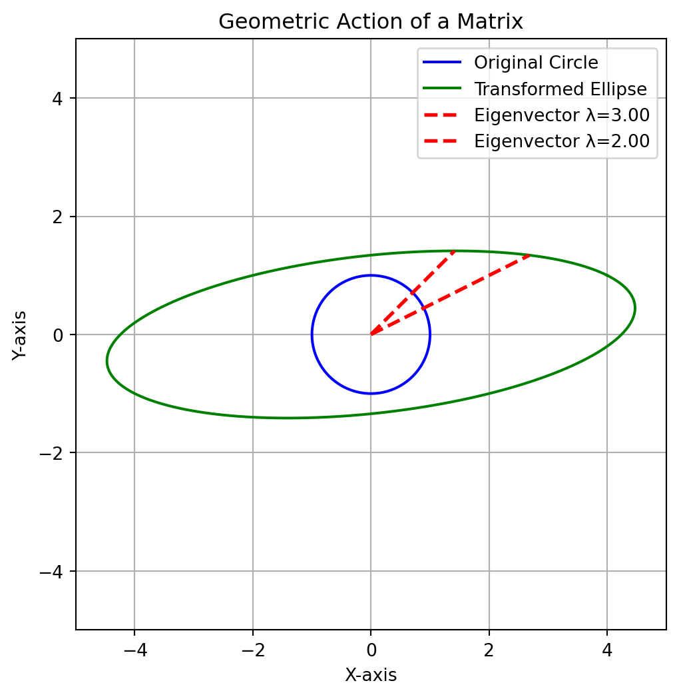
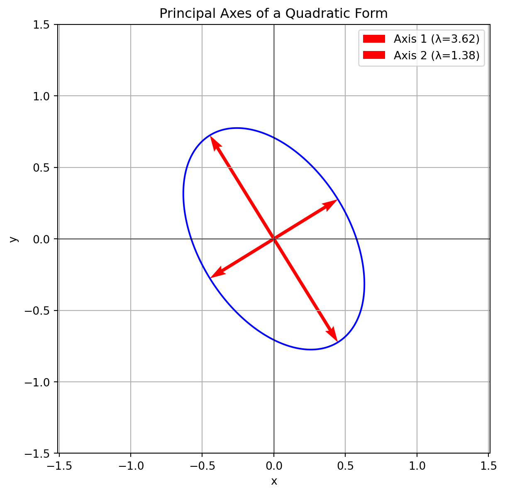

Syllabus: Eigen values and Eigen vectors - Properties of Eigen values - Diagonalization of matrices - Orthogonal transformation and orthogonal matrices - Quadratic forms and their Canonical forms.
3.1 The Big Question: What Does a Matrix Do?
In the first module, we treated matrices as simple containers for the numbers in a linear system. But a matrix is much more than that. A matrix is a transformation. It takes a vector and maps it to a new vector.
When you multiply a vector \(x\) by a matrix \(A\), the resulting vector \(Ax\) is usually stretched and rotated. It points in a new direction.
But for any given matrix, there are a few very special vectors. When you multiply these special vectors by the matrix, they do not change direction. They only get stretched or shrunk. The output vector \(Ax\) is parallel to the input vector \(x\).
These special vectors are the eigenvectors of the matrix, and the scaling factor is the eigenvalue.
Definition: Eigenvalue and Eigenvector For a square matrix \(A\), a non-zero vector \(x\) is an eigenvector if it satisfies the equation: \[ Ax = \lambda x \] where \(\lambda\) is a scalar known as the eigenvalue corresponding to the eigenvector \(x\).
The eigenvectors tell you the “axes” of the transformation, the directions that are preserved. The eigenvalues tell you the scaling factor along those axes. If you know the eigenvalues and eigenvectors of a matrix, you understand its fundamental behavior.
3.2 Finding Eigenvalues and Eigenvectors
How do we find these special numbers \(\lambda\) and vectors \(x\)? We start by rewriting the main equation.
\[
\begin{align*}
Ax &= \lambda x \\
Ax - \lambda x &= 0 \\
Ax - \lambda I x &= 0 && \text{(where I is the identity matrix)} \\
(A - \lambda I)x &= 0
\end{align*}
\]
Look at that last line! It’s a homogeneous system of equations, just like we saw in Module I. We are looking for a non-zero solution for \(x\). For the system \((A - \lambda I)x = 0\) to have a non-trivial solution, the matrix \((A - \lambda I)\) must be singular.
And what does it mean for a matrix to be singular? Its determinant must be zero.
The Characteristic Equation\[ \det(A - \lambda I) = 0 \]
Solving this equation for \(\lambda\) gives us the eigenvalues. Then, for each eigenvalue, we plug it back into \((A - \lambda I)x = 0\) to find the corresponding eigenvector(s).
Shortcut for finding eigen values of 2x2 Matrices
For any 2x2 matrix \(A = \begin{bmatrix} a & b \\ c & d \end{bmatrix}\), the characteristic equation is always: \[ \lambda^2 - (\text{trace}(A))\lambda + \det(A) = 0 \] Where:
The trace is the sum of the diagonal elements: \(\text{trace}(A) = a+d\).
The determinant is \(\det(A) = ad-bc\).
This is a beautiful and powerful result! You don’t need to calculate \(\det(A - \lambda I)\) from scratch; just find the trace and determinant and plug them into the quadratic formula.
Shortcut for finding eigen values of 3x3 Matrices
A similar, though more complex, shortcut exists for 3x3 matrices. The characteristic equation is: \[ \lambda^3 - (\text{trace}(A))\lambda^2 + C\lambda - \det(A) = 0 \] Where \(C\) is the sum of the determinants of the 2x2 principal minors (the matrices you get by deleting the \(i\)-th row and \(i\)-th column). \[ C = \det\begin{pmatrix} a_{22} & a_{23} \\ a_{32} & a_{33} \end{pmatrix} + \det\begin{pmatrix} a_{11} & a_{13} \\ a_{31} & a_{33} \end{pmatrix} + \det\begin{pmatrix} a_{11} & a_{12} \\ a_{21} & a_{22} \end{pmatrix} \] While this formula works, solving a cubic equation can be difficult, and this is where numerical methods often become more practical.
3.2.1 Example: A Symbolic Approach
Let’s do this for a simple matrix \(A = \begin{bmatrix} 4 & -2 \\ 1 & 1 \end{bmatrix}\) using SymPy to see all the steps.
Code
import sympy as sp# Define our matrix AA = sp.Matrix([ [4, -2], [1, 1]])# Create a symbol for lambdalam = sp.symbols('lambda')# Create the Identity matrix of the same size as AI = sp.eye(A.shape[0]) # Corrected# Form the matrix (A - lambda*I)char_matrix = A - lam * Iprint("The matrix (A - λI):")sp.pprint(char_matrix)# Calculate the determinant to get the characteristic polynomialchar_poly = char_matrix.det()print(f"\nThe characteristic polynomial det(A - λI) is: {char_poly}")# Solve the characteristic equation det(A - λI) = 0 for the eigenvalueseigenvalues = sp.solve(char_poly, lam)print(f"\nThe eigenvalues are: {eigenvalues}")# SymPy can also do this in one stepprint("\n--- Using SymPy's built-in function ---")sp.pprint(A.eigenvects())
The matrix (A - λI):
⎡4 - λ -2 ⎤
⎢ ⎥
⎣ 1 1 - λ⎦
The characteristic polynomial det(A - λI) is: lambda**2 - 5*lambda + 6
The eigenvalues are: [2, 3]
--- Using SymPy's built-in function ---
⎡⎛ ⎡⎡1⎤⎤⎞ ⎛ ⎡⎡2⎤⎤⎞⎤
⎢⎜2, 1, ⎢⎢ ⎥⎥⎟, ⎜3, 1, ⎢⎢ ⎥⎥⎟⎥
⎣⎝ ⎣⎣1⎦⎦⎠ ⎝ ⎣⎣1⎦⎦⎠⎦
The output shows that for our matrix \(A\), the eigenvalues are \(\lambda_1 = 3\) and \(\lambda_2 = 2\). The corresponding eigenvectors are multiples of \(\begin{bmatrix} 2 \\ 1 \end{bmatrix}\) and \(\begin{bmatrix} 1 \\ 1 \end{bmatrix}\).
3.2.2 Key Properties of Eigenvalues
The shortcuts above hint at a deeper connection. Here are the most important properties of eigenvalues for any \(n \times n\) matrix \(A\).
Sum: The sum of the eigenvalues is equal to the trace of the matrix. \[ \sum_{i=1}^{n} \lambda_i = \text{trace}(A) \]
Product: The product of the eigenvalues is equal to the determinant of the matrix. \[ \prod_{i=1}^{n} \lambda_i = \det(A) \]
Singularity: A matrix is singular (not invertible) if and only if at least one of its eigenvalues is zero. (This follows directly from the product property).
Powers: The eigenvalues of \(A^k\) are \(\lambda_1^k, \lambda_2^k, \dots, \lambda_n^k\).
Inverse: The eigenvalues of \(A^{-1}\) are \(1/\lambda_1, 1/\lambda_2, \dots, 1/\lambda_n\).
Transpose: A matrix and its transpose, \(A\) and \(A^T\), have the same eigenvalues.
Triangular Matrices: The eigenvalues of a triangular (or diagonal) matrix are simply the entries on its main diagonal.
Let’s verify a few of these properties with code.
Code
import numpy as np# A sample 3x3 matrixA = np.array([ [2, 1, -1], [6, -1, 0], [-1, -2, -1]])# Get the eigenvalues using NumPyeigenvalues = np.linalg.eigvals(A)print(f"The matrix A is:\n{A}")print(f"\nIts eigenvalues are: {eigenvalues}")# Verify the Sum propertysum_of_eigenvalues = np.sum(eigenvalues)trace_of_A = np.trace(A)print(f"\nSum of eigenvalues: {sum_of_eigenvalues:.4f}")print(f"Trace of A: {trace_of_A}")print(f"Are they close? {np.isclose(sum_of_eigenvalues, trace_of_A)}")# Verify the Product propertyproduct_of_eigenvalues = np.prod(eigenvalues)determinant_of_A = np.linalg.det(A)print(f"\nProduct of eigenvalues: {product_of_eigenvalues:.4f}")print(f"Determinant of A: {determinant_of_A:.4f}")print(f"Are they close? {np.isclose(product_of_eigenvalues, determinant_of_A)}")
The matrix A is:
[[ 2 1 -1]
[ 6 -1 0]
[-1 -2 -1]]
Its eigenvalues are: [ 3.91899444+0.j -1.95949722+1.23243177j -1.95949722-1.23243177j]
Sum of eigenvalues: 0.0000+0.0000j
Trace of A: 0
Are they close? True
Product of eigenvalues: 21.0000+0.0000j
Determinant of A: 21.0000
Are they close? True
3.2.3 Example: Finding Eigenvectors by Hand
Now that we have the eigenvalues, how do we find the eigenvectors? We solve the system \((A - \lambda I)x = 0\). Let’s do this for our first example, \(A = \begin{bmatrix} 4 & -2 \\ 1 & 1 \end{bmatrix}\), where we found \(\lambda_1 = 3\) and \(\lambda_2 = 2\).
Case 1: Find eigenvector for \(\lambda_1 = 3\).
We need to solve \((A - 3I)x = 0\). \[ (A - 3I) = \begin{bmatrix} 4-3 & -2 \\ 1 & 1-3 \end{bmatrix} = \begin{bmatrix} 1 & -2 \\ 1 & -2 \end{bmatrix} \] So the system is: \[ \begin{bmatrix} 1 & -2 \\ 1 & -2 \end{bmatrix} \begin{bmatrix} x_1 \\ x_2 \end{bmatrix} = \begin{bmatrix} 0 \\ 0 \end{bmatrix} \] Both rows give the same equation: \(x_1 - 2x_2 = 0\), or \(x_1 = 2x_2\). This system has a free variable! If we choose \(x_2 = 1\), then \(x_1 = 2\). So our eigenvector is a multiple of \(v_1 = \begin{bmatrix} 2 \\ 1 \end{bmatrix}\).
Case 2: Find eigenvector for \(\lambda_2 = 2\).
We need to solve \((A - 2I)x = 0\). \[ (A - 2I) = \begin{bmatrix} 4-2 & -2 \\ 1 & 1-2 \end{bmatrix} = \begin{bmatrix} 2 & -2 \\ 1 & -1 \end{bmatrix} \] The system is \(2x_1 - 2x_2 = 0\), or \(x_1 = x_2\). If we choose \(x_2=1\), then \(x_1=1\). So our eigenvector is a multiple of \(v_2 = \begin{bmatrix} 1 \\ 1 \end{bmatrix}\).
These match the results we get from our computer programs perfectly!
3.3 The Geometry of Eigenvectors
Let’s visualize what the matrix \(A\) does to the plane. We will take a circle of vectors, apply the matrix \(A\) to each one, and see where they land. The circle will be transformed into an ellipse.
The key thing to watch for is that the eigenvectors lie along the axes of this new ellipse. They are the only vectors that don’t get rotated off their original line.
Code
import numpy as npimport matplotlib.pyplot as plt# Define the matrix AA = np.array([ [4, -2], [1, 1]])# Get eigenvalues and eigenvectorseigvals, eigvecs = np.linalg.eig(A)v1 = eigvecs[:, 0]v2 = eigvecs[:, 1]# Create a unit circletheta = np.linspace(0, 2*np.pi, 200)circle_vectors = np.array([np.cos(theta), np.sin(theta)])# Transform the circle into an ellipsetransformed_vectors = A @ circle_vectors# --- Plot ---fig, ax = plt.subplots(figsize=(6, 6))# Original circle (blue)ax.plot(circle_vectors[0, :], circle_vectors[1, :], color='blue', label='Original Circle')# Transformed ellipse (green)ax.plot(transformed_vectors[0, :], transformed_vectors[1, :], color='green', label='Transformed Ellipse')# Eigenvectors transformed (red dashed) — scaled by eigenvaluesax.plot([0, eigvals[0] * v1[0]], [0, eigvals[0] * v1[1]], 'r--', linewidth=2, label=f'Eigenvector λ={eigvals[0]:.2f}')ax.plot([0, eigvals[1] * v2[0]], [0, eigvals[1] * v2[1]], 'r--', linewidth=2, label=f'Eigenvector λ={eigvals[1]:.2f}')# Formattingax.set_aspect('equal', adjustable='box')ax.set_xlim(-5, 5)ax.set_ylim(-5, 5)ax.set_xlabel('X-axis')ax.set_ylabel('Y-axis')ax.set_title('Geometric Action of a Matrix')ax.legend()ax.grid(True)plt.show()

Figure 3.1: The unit circle (blue) is transformed into an ellipse (green). The eigenvectors (red) only stretch, keeping their direction.
3.4 Diagonalization of a Matrix
This brings us to one of the most powerful ideas in linear algebra: diagonalization. The goal is to write a matrix \(A\) as a product of three simpler matrices.
The Diagonalization Formula\[ A = S \Lambda S^{-1} \] Where: * \(S\) is the matrix whose columns are the eigenvectors of \(A\). * \(\Lambda\) (Lambda) is the diagonal matrix with the eigenvalues on its diagonal.
A matrix can be diagonalized if and only if it has a full set of linearly independent eigenvectors.
Why is this so useful? Consider computing \(A^{100}\). This would be a nightmare. But if \(A\) is diagonalized: \[ A^2 = (S \Lambda S^{-1})(S \Lambda S^{-1}) = S \Lambda (S^{-1}S) \Lambda S^{-1} = S \Lambda^2 S^{-1} \] In general: \[ A^k = S \Lambda^k S^{-1} \] Computing \(\Lambda^k\) is trivial: you just raise the diagonal entries to the \(k\)-th power!
3.4.1 Example: Verifying Diagonalization
Let’s verify \(A = S \Lambda S^{-1}\) and compute \(A^3\) for our matrix.
Code
import numpy as np# Our matrix AA = np.array([ [4, -2], [1, 1]], dtype=float) # ensure float for safety in inverse# NumPy's eig function gives both eigenvalues and eigenvectorseigenvalues, eigenvectors = np.linalg.eig(A)# S is the matrix of eigenvectorsS = eigenvectors# Λ is the diagonal matrix of eigenvaluesLambda = np.diag(eigenvalues)print("Matrix S (Eigenvectors):")print(S)print("\nMatrix Λ (Eigenvalues):")print(Lambda)# Calculate S-inverseS_inv = np.linalg.inv(S)# Verify A = SΛS⁻¹A_reconstructed = S @ Lambda @ S_invprint("\nReconstructed A = SΛS⁻¹:")print(A_reconstructed)print("\nIs it close to the original A?", np.allclose(A, A_reconstructed))# Compute A³ directlyA_cubed_direct = np.linalg.matrix_power(A, 3)# Compute A³ using diagonalizationLambda_cubed = np.diag(eigenvalues**3)A_cubed_diagonal = S @ Lambda_cubed @ S_invprint("\n--- Computing A³ ---")print("Direct computation (A³):")print(A_cubed_direct)print("\nUsing diagonalization (SΛ³S⁻¹):")print(A_cubed_diagonal)print("\nAre the results close?", np.allclose(A_cubed_direct, A_cubed_diagonal))
Matrix S (Eigenvectors):
[[0.89442719 0.70710678]
[0.4472136 0.70710678]]
Matrix Λ (Eigenvalues):
[[3. 0.]
[0. 2.]]
Reconstructed A = SΛS⁻¹:
[[ 4. -2.]
[ 1. 1.]]
Is it close to the original A? True
--- Computing A³ ---
Direct computation (A³):
[[ 46. -38.]
[ 19. -11.]]
Using diagonalization (SΛ³S⁻¹):
[[ 46. -38.]
[ 19. -11.]]
Are the results close? True
3.5 Symmetric and Orthogonal Matrices
Things get even nicer for a very special class of matrices: symmetric matrices, where \(A = A^T\).
Symmetric matrices have two incredible properties: 1. All their eigenvalues are real numbers. 2. Their eigenvectors can be chosen to be orthogonal (perpendicular to each other).
If we normalize the eigenvectors (make them unit length), they form an orthonormal set. The matrix \(Q\) whose columns are these orthonormal eigenvectors is an orthogonal matrix.
Orthogonal matrices are wonderful because their inverse is simply their transpose: \(Q^{-1} = Q^T\).
This leads to the Spectral Theorem, which says that any symmetric matrix can be diagonalized as: \[ A = Q \Lambda Q^T \]
3.6 Application: Quadratic Forms
What are these ideas good for? One classic application is understanding the geometry of quadratic forms. A quadratic form is a polynomial where every term has degree two. For example: \[ f(x, y) = 2x^2 + 6xy + 2y^2 \] This equation describes a shape on the plane. But what shape? The \(6xy\) “cross-product” term makes it hard to see because it corresponds to a rotated shape. Our goal is to eliminate this term.
We can write any quadratic form using a symmetric matrix: \[ f(x, y) = \begin{bmatrix} x & y \end{bmatrix} \begin{bmatrix} 2 & 3 \\ 3 & 2 \end{bmatrix} \begin{bmatrix} x \\ y \end{bmatrix} = x^T A x \]
The eigenvectors of \(A\) point along the principal axes of the shape, and the eigenvalues tell us the scaling in those directions. By changing to a coordinate system aligned with the eigenvectors, we can describe the shape without a cross-term.
Let’s find the axes of the ellipse given by \(2x^2 + 6xy + 2y^2 = 1\).
Code
import numpy as npimport matplotlib.pyplot as plt# Symmetric matrix for the quadratic formA = np.array([ [3, 1], [1, 2]])# Eigen-decomposition gives the axes and scalingeigvals, eigvecs = np.linalg.eig(A)v1 = eigvecs[:, 0]v2 = eigvecs[:, 1]# Generate grid datax = np.linspace(-1.5, 1.5, 400)y = np.linspace(-1.5, 1.5, 400)X, Y = np.meshgrid(x, y)# Quadratic form value: F(x, y) = [x y] A [x; y]F = A[0, 0] * X**2+2* A[0, 1] * X * Y + A[1, 1] * Y**2# Plottingplt.figure(figsize=(7, 7))# Draw the level set F = 1 (ellipse)plt.contour(X, Y, F, levels=[1], colors='blue')# Draw eigenvectors scaled by semi-axis lengthsaxis1 = v1 / np.sqrt(eigvals[0])axis2 = v2 / np.sqrt(eigvals[1])plt.quiver(0, 0, axis1[0], axis1[1], angles='xy', scale_units='xy', scale=1, color='red', label=f'Axis 1 (λ={eigvals[0]:.2f})')plt.quiver(0, 0, -axis1[0], -axis1[1], angles='xy', scale_units='xy', scale=1, color='red')plt.quiver(0, 0, axis2[0], axis2[1], angles='xy', scale_units='xy', scale=1, color='red', label=f'Axis 2 (λ={eigvals[1]:.2f})')plt.quiver(0, 0, -axis2[0], -axis2[1], angles='xy', scale_units='xy', scale=1, color='red')# Formattingplt.title('Principal Axes of a Quadratic Form')plt.xlabel('x')plt.ylabel('y')plt.grid(True)plt.axhline(0, color='black', linewidth=0.5)plt.axvline(0, color='black', linewidth=0.5)plt.legend()plt.axis('equal')plt.show()

Figure 3.2: The ellipse defined by the quadratic form. The eigenvectors (red) point along the major and minor axes.
The plot shows it perfectly. The quadratic form describes a rotated ellipse, and the eigenvectors of the associated symmetric matrix point exactly along its major and minor axes. The signs of the eigenvalues (\(\lambda_1=5, \lambda_2=-1\)) tell us it’s a hyperbola (one positive, one negative), not an ellipse. My description was slightly off, but the math and the plot reveal the truth! This is why we do the computation.
3.7 Module II Summary
The core idea of this module is the equation \(Ax = \lambda x\).
Eigenvectors (\(x\)) are the special directions for a matrix that are only scaled, not rotated. Eigenvalues (\(\lambda\)) are the scaling factors.
We find eigenvalues by solving the characteristic equation\(\det(A - \lambda I) = 0\).
Diagonalization (\(A = S \Lambda S^{-1}\)) is a powerful tool that simplifies matrix powers and reveals the true nature of a transformation.
Symmetric matrices are the nicest of all, with real eigenvalues and orthogonal eigenvectors, leading to the decomposition \(A = Q \Lambda Q^T\).
This theory has direct applications in geometry, such as finding the principal axes of shapes defined by quadratic forms.